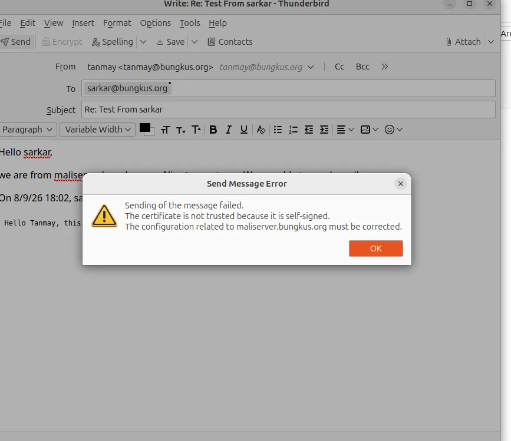
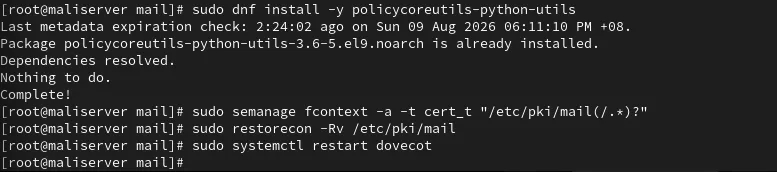

The mail chapter of my group's server assignment looked straightforward on paper: install Postfix and Dovecot, create two users, send mail between them. The installation was the easy part. Getting a mail client to send was where the real work was. My group kept a troubleshooting log of every failure, and this article is that log, cleaned up. The setup was Rocky Linux as the mail server and an Ubuntu desktop with Thunderbird as the client, on the lab domain bungkus.org.
The basic setup in one minute
The mail server needs an MX record in the zone (see my BIND article), Postfix to send and receive, and Dovecot to let clients read their mailboxes. The core Postfix settings were these:
myhostname = maliserver.bungkus.org
mydomain = bungkus.org
myorigin = $mydomain
inet_interfaces = all
mydestination = $myhostname, localhost.$mydomain, localhost, $mydomain
home_mailbox = Maildir/On the Dovecot side I used mail_location = maildir:~/Maildir and set disable_plaintext_auth = no with the plain and login mechanisms. That is acceptable here only because the connection is wrapped in TLS. Local delivery between the two users was the first thing I tested.
Problem 1: port 465 refused connections
Thunderbird could not connect to SMTPS. The reason was that the smtps line in /etc/postfix/master.cf was still commented out. The -o option lines under it did nothing while the parent service line was disabled. I uncommented it, ran postfix check, restarted Postfix and tested the port with nc -zv.
Problem 2: "Overriding earlier entry" in the logs
A duplicate certificate path in main.cf from an earlier edit caused this warning. It was harmless, Postfix stayed active, and I left it alone. Clean it up on a real server, but do not panic when you see it.
Problem 3: Thunderbird's certificate dialog froze
Because the server uses a self-signed certificate, Thunderbird asks you to add a security exception. On a non-default port the dialog froze when I clicked Confirm. This was a Thunderbird bug, not a server problem, and I proved that by testing the server directly with openssl s_client, nc and systemctl status dovecot. If the server side checks out, stop editing server configs.
Problem 4: certificate imported, still untrusted
My workaround was importing the certificate with certutil. It reported success, but Thunderbird still said the certificate was untrusted. Thunderbird on this Ubuntu machine was a snap package, and snap confinement kept it from reliably seeing changes I made to the certificate database from the command line. I removed the snap and installed Thunderbird from Mozilla's PPA as a normal .deb, and the problem went away.

Problem 5: login failed right after account creation
I had typed the full email address in the Username field. Dovecot authenticates against the local Linux account, so the username is just tanmay, not tanmay@bungkus.org. I changed it in both the incoming and outgoing server settings.
Problem 6: "No route to host" when sending
Sending failed on ports 465 and 587. My firewalld rules allowed smtp, imap, imaps, pop3 and pop3s, and never smtps or 587. The fix:
sudo firewall-cmd --permanent --add-service=smtps
sudo firewall-cmd --permanent --add-port=587/tcp
sudo firewall-cmd --reloadProblem 7: "Login to account failed" with the correct password
This was the hardest one. Postfix had smtpd_sasl_auth_enable set to no, and smtpd_sasl_type was cyrus instead of dovecot, and Dovecot had no authentication socket for Postfix to talk to. So I enabled Dovecot-based SASL in Postfix with postconf, and added a unix_listener for /var/spool/postfix/private/auth inside the service auth block of /etc/dovecot/conf.d/10-master.conf.
A related fix on the Dovecot side was SELinux. After copying certificates into /etc/pki/mail, I had to give them the right context before Dovecot would read them:
sudo semanage fcontext -a -t cert_t "/etc/pki/mail(/.*)?"
sudo restorecon -Rv /etc/pki/mail
sudo systemctl restart dovecot
A debugging order that would have saved me time
- Test the port first with
nc -zv host port. If it refuses, the problem is the service or the firewall, not the password. - Check
journalctlor/var/log/maillogon the server while you try again from the client. - Prove the server works from the command line before blaming the server config. My Thunderbird bugs were client-side.
- Change one thing at a time and restart the service you changed.
After all seven fixes, Thunderbird sent and received mail between tanmay and sarkar. Later I added Fail2ban to watch Dovecot's logins, which I wrote up in the Fail2ban article.